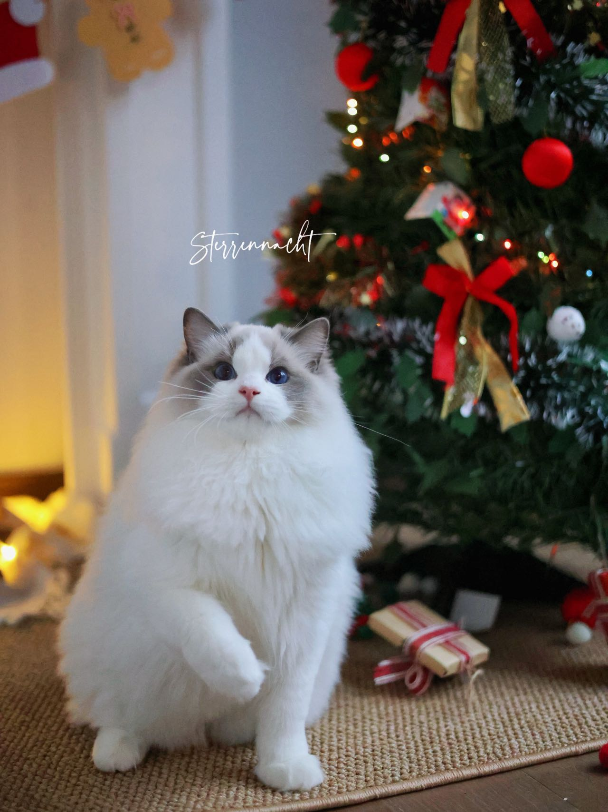

Shuoyang Xie
I am a PhD candidate in Accounting at Penn State University. My research examines how information frictions shape corporate disclosure, investor behavior, and capital markets. I received my bachelor's degree with a double major in Economics and Commerce from the University of Toronto, where I graduated with High Distinction.
Research
This paper examines whether managers' voluntary disclosure behavior changes when the presence of local institutional investors grows. Using the introduction of new airline routes that connect firms with institutional investors as exogenous variation in local institutional investor presence, I find that connected firms significantly increase their voluntary disclosure frequency in two important ways: issuing 8% more voluntary Form 8-K filings and providing 28% more management guidance. I provide cross-sectional evidence that the increase in voluntary disclosure is stronger for larger firms in both voluntary 8-K and management guidance channels, and stronger for more profitable firms in the management guidance channel. I also find that these firms experience narrower bid–ask spreads and higher trading volume following the introduction of new routes, consistent with reduced information asymmetry and increased liquidity. Overall, these findings suggest that managers respond to greater demand for information from local institutional investors by increasing the supply of public information and that the increase improves firms' information environments.
Teaching
- The instructor really knew how to break down complicated problems in a clear, step-by-step way.
- The responsive and participatory classroom environment created by the instructor supported my learning.
- FIFO and LIFO were easier than I expected because she explained them in a simple way.
- The hands-on activities using the whiteboard were especially productive and engaging.
- Her explanations were clear, and I always felt that she was prepared and organized.
My teaching emphasizes clear explanations, inquiry-based learning, and hands-on classroom practice. I further developed my teaching by completing Penn State’s CIRTL Associate Level training and received the CIRTL Teaching Certificate.
Personal
I am married to Dr. Shaokun Zhang. We enjoy spending time with our cat, Dobby.

Contact
Email: skx5058@psu.edu
Institution: Smeal College of Business, Pennsylvania State University
Area: Accounting